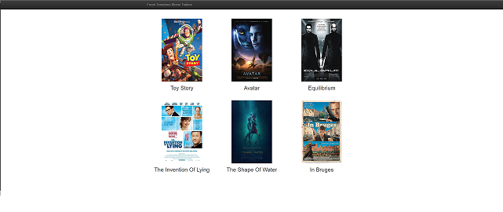

Movie Trailer Website README
Introduction:
- Welcome to the Movie Trailer Website README. Below you will find all the information you need to use and tailor this code for your own use!
How to Use:
- Using the Movie Trailer Website is as easy as locating the 'entertainment_center.py' file located in the parent directory of the project and double clicking to open!

How to Run:
- Open Terminal or Command Prompt
- Change Directory to the parent folder of the Movie Trailer Website Project
- Type -->> 'python entertainment_center.py'
- This will create the html file in parent directory and will automatically open your default browser to the Movie Trailer Website Project!
- Enjoy!
How to Edit:
- Editing the python file will allow you to easily add your own favorite Movies! We recommend downloading and using IDLE to edit the included 'entertainment_center.py'
but any python editor will work!
- The included python file: 'entertainment_center.py' has been commented with examples on how to add your own Movies!
- Add your own movies using this format: nameofmovie = media.Movie("Movie Title", "Movie Description", "Poster Image URL", "Movie Trailer URL")
- Add your movie to the movies list at the bottom of the code:
IE: movies = [
toy_story,
avatar,
equilibrium,
the_invention_of_lying,
the_shape_of_water,
coriolanus]